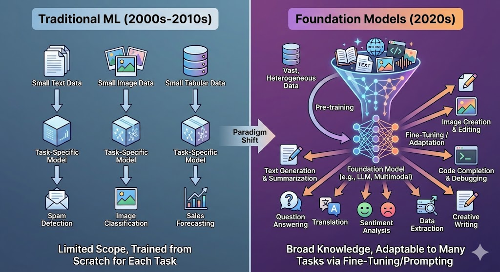
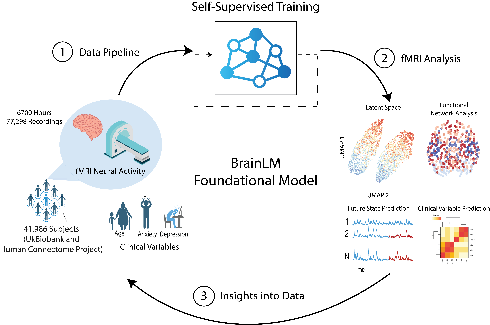
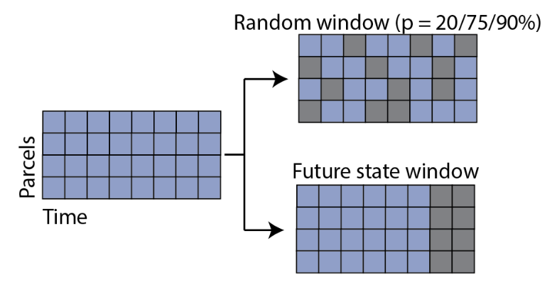
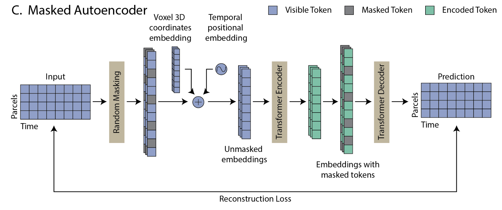
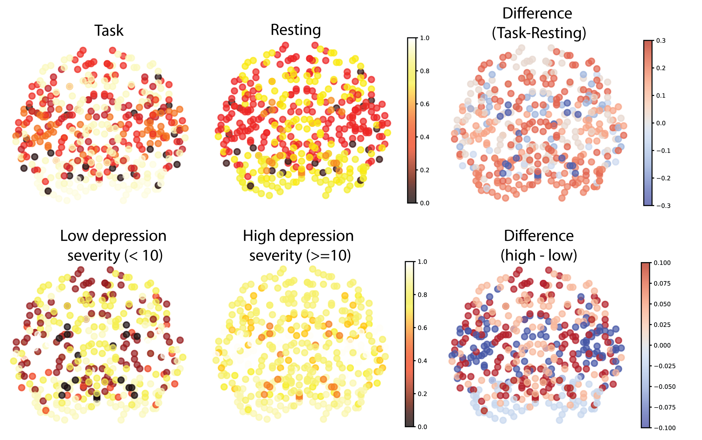

BrainLM
A Foundation Model for Interpretable and Generalizable Analysis of Human Brain Activity
Aakash Patel
Department of Computer Science, Yale University
The "Foundation" Model Concept
Traditional AI: Narrowly defined tasks, limited generalization
Foundation Models:
- Trained on vast, heterogeneous data
- Self-supervised learning
- Adaptable to diverse applications
Image generated by Google Gemini
How Foundation Models "Learn"
The "Fill-in-the-Blank" Approach
- Self-Supervision: Hide parts of data → reconstruct
- Masking: Minimize reconstruction error
- Result: Model learns underlying structure
Similar to a "cloze test" — predict the missing word/data
The Challenge of fMRI Analysis
- Data Complexity: High-dimensional, non-linear
- Variability: Across scanners, sites, cohorts
- Generalization Gap: Models fail on new datasets
- Data Scarcity: Prior work used small datasets
Introducing BrainLM
6,700 hours of fMRI data
77,000 recordings from 42,000 subjects (UK Biobank)
BrainLM Framework Overview
ROI Parcellation
- Preprocessing: Motion distortion correction, denoising, temporal filtering, and framewise displacement correction.
- Volumes moothed to 4 mm FWHM and parcellated into 424 functional regions.
ROI Parcellation
Spatiotemporal Masking
Spatiotemporal Masking: Randomly mask 200 time-step windows
Model Architecture
Model Architecture: Masked Autoencoder
Forecasting Brain States
Generalization to New Cohorts
- Task: Predict next 20 time-steps
- Top: Unseen patients from UKB
- Bottom: Completely unseen data from HCP
BrainLM (red) matches ground truth (black) on UK Biobank and HCP
The Latent Space
Self-organized by clinical dimensions
UMAP shows organization by age (color) and task vs rest (clusters)
Clinical Variable Prediction
- Task: Predict Age, Anxiety (GAD-7), PTSD (PCL-5), Neuroticism
- Result: BrainLM achieved the lowest MSE vs baselines (LSTM, GCN, SVR)
Brain Age Gap
- Psychiatric conditions → "accelerated brain aging"
- Predict age, calculate residual (true - predicted age)
- Finding: High psychiatric scores → elevated brain age gap
Can Treatment Reverse Brain Aging?

EMBARC trial: Mean change -0.70 years after one week — brain age is state-dependent
Interpretability: Attention Maps
High depression → reduced attention in sgACC (emotion regulation) — aligns with pathophysiology
Zero-Shot Functional Networks
- Task: Segment brain into functional networks
- Method: Use attention weights, no labels
- Result: BrainLM achieves 58.8% accuracy (vs GCN 25.9%)
Summary
- First foundation model for fMRI at scale
- Generalizes to new scanners and cohorts
- Clinical utility: Predicts psychiatric variables
- Interpretable: Attention maps align with neuroscience
Future: Integration with EEG, Genomics, expanded atlases
Acknowledgments
Collaborators: Josue Ortega Caro, Jaewon Chung, Syed A. Rizvi, Jans Solano, Christopher Averill, Antonio H. de O. Fonseca, Matteo Rosati, David van Dijk & Chadi G. Abdallah
Support: Yale Wu Tsai Institute
van Dijk Lab: https://www.vandijklab.org